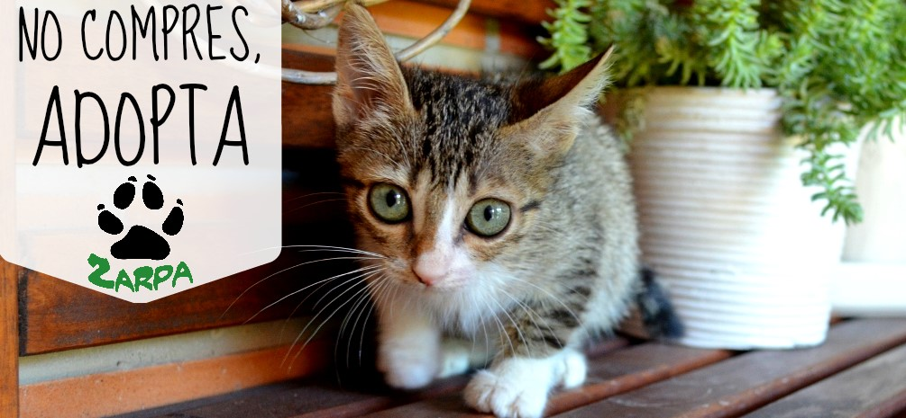

CASA GATITOS
La Fundación Casa Gatitos ha estado trabajando incansablemente durante los últimos 8 años para ayudar a rescatar y cuidar a los animales de Quilmes. Estamos en una misión para ayudar a más animales abandonados y brindarles la mejor atención posible. Nuestro compromiso y nuestras metas son más fuertes y más grandes que nunca.
La fundación actualmente tiene un refugio donde se albergan 150 gatos en promedio los cuales han sido rescatados en condición de maltrato y no han logrado ser adoptados por lo que la organización garantiza los cuidados necesarios para su Buena calidad de vida.
Ayudanos a ayudar.